Aplikasi Anda, susunan Anda
Atur dock dengan remote TV. Tekan Bawah untuk membuka grid semua aplikasi yang diurutkan berdasarkan penggunaan, dengan 5, 6, atau 7 aplikasi per baris. Tekan lama OK untuk menambah, memindahkan, atau menghapus aplikasi.

Aplikasi Anda, hari Anda, dan hal-hal yang penting bagi Anda. Launcher cepat dan personal untuk Android TV dan Google TV—tanpa tumpukan rekomendasi.
Hanya sebesar ~550 KB. Itu seluruh launcher, dengan semua fiturnya. Data langsung, seperti cuaca dan peta Globe, hanya diunduh saat digunakan.
Tidak perlu komputer untuk memasang. Unduh APK dari rilis terbaru, pasang di TV dari flash drive atau aplikasi Downloader, lalu pilih sebagai Home. Pembaruan ada di Settings → About.
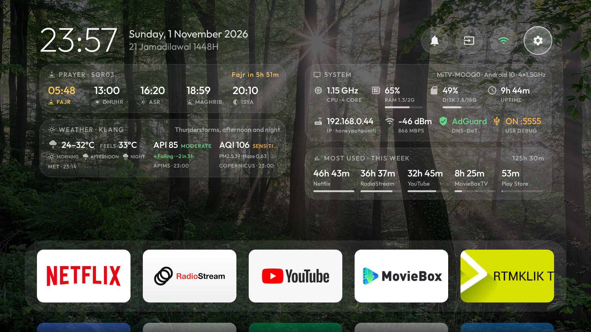
Dirancang untuk TV, bukan tampilan ponsel yang diperbesar. Hal penting hanya sejauh satu tekan remote, dan setiap kartu bisa diatur sesuai kebutuhan Anda.
Atur dock dengan remote TV. Tekan Bawah untuk membuka grid semua aplikasi yang diurutkan berdasarkan penggunaan, dengan 5, 6, atau 7 aplikasi per baris. Tekan lama OK untuk menambah, memindahkan, atau menghapus aplikasi.
Jam yang jelas, tanggal Hijriah, lima waktu salat harian, dan hitung mundur salat berikutnya. Waktu salat Kemenag untuk kota Anda dideteksi dari lokasi TV, atau pilih salah satu dari 58 kota Indonesia; azan dan pengingat awal bisa ditampilkan di atas aplikasi lain.
Prakiraan cuaca BMKG untuk kota terdekat dengan TV Anda, suhu dan suhu terasa, serta kualitas udara Copernicus (US AQI dan PM2.5). Hujan, kabut, kilat, dan kabut asap muncul sebentar di layar utama sebelum mereda.
Lihat judul, artis, sampul album, dan kontrol pemutaran saat audio diputar. Kartu aplikasi yang paling sering digunakan mengambil tempatnya saat musik berhenti.
Kecepatan CPU, RAM, penyimpanan, waktu aktif, Wi-Fi, dan debugging sekilas. Tampilan aplikasi berjalan menunjukkan aplikasi aktif dan memungkinkan Anda menutup atau menyembunyikannya.
Pemantau lalu lintas jaringan opsional: aplikasi mana menghubungi server dan negara mana, dengan nama server, protokol, dan data yang digunakan—digambar sebagai rute pada Globe. VPN lokal di TV itu sendiri: tidak ada yang dikirim ke mana pun, tidak ada yang didekripsi, riwayat disimpan 30 menit di memori.
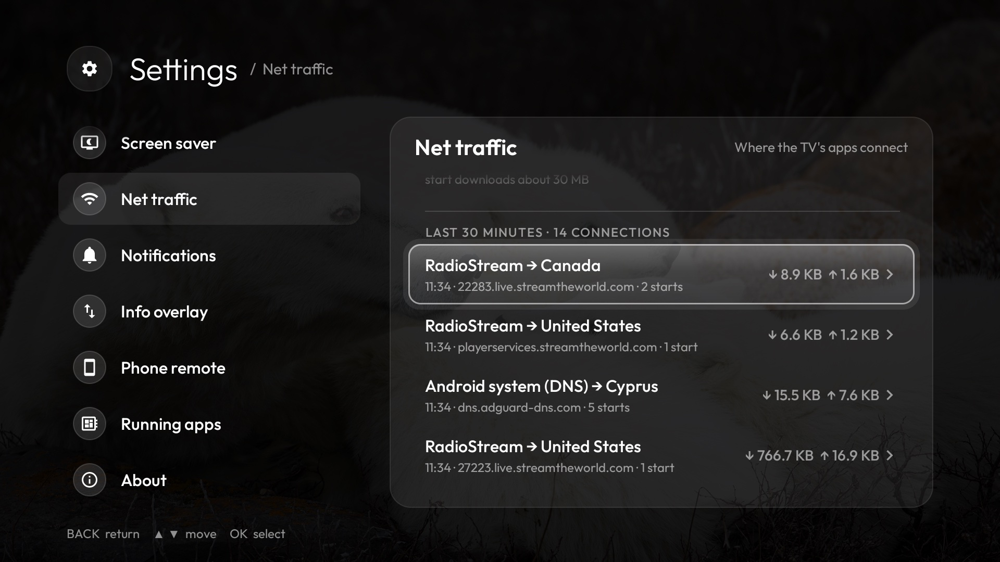
Foto harian Bing, tujuh wallpaper bawaan, atau foto sendiri. Pilih kartu yang ditampilkan, redupkan wallpaper, atur jam, dan sesuaikan notifikasi—semuanya di Pengaturan TV.
Pengaturan → Button Mapper: beri tombol remote mana pun tindakan baru untuk tekan sekali, dua kali, atau lama: buka aplikasi, pengaturan Android atau TV Home, screen saver, tidur, menu daya, tangkapan layar, senyap, atau volume. Tekan tombol itu untuk menambahkannya. Berfungsi meski debugging USB dimatikan; tombol panah dan OK tetap seperti biasa.
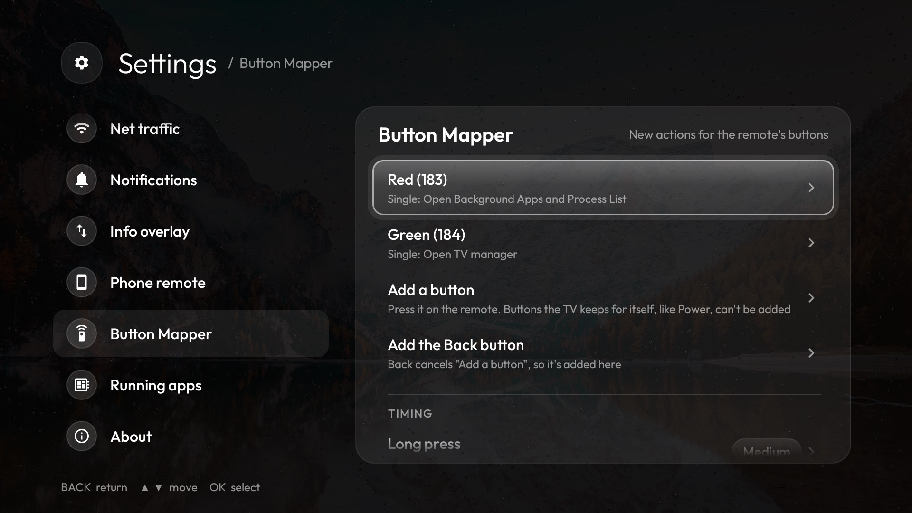
Tekan lama OK pada gear Pengaturan untuk memulai screen saver, mengatur timer tidur, tidur, mulai ulang, atau mematikan TV (mulai ulang dan matikan meminta konfirmasi dulu). Menu Input untuk HDMI, AV, dan TV Langsung; lonceng untuk pembaruan launcher dan Play Store, perangkat, serta memori rendah; peringatan koneksi; dan bar info opsional di atas aplikasi.

Lihat Bumi sesuai orientasi dan cahaya matahari sebenarnya. Ikuti garis Maghrib dan Subuh, Makkah dan kiblat Anda, cahaya kota, pantulan matahari, aurora, gempa bumi, suntingan peta langsung, dan orbit sebenarnya ISS, Tiangong, serta Hubble.
Pilih orbit kamera 2 menit atau rotasi Bumi waktu nyata; putar tampilan dengan remote TV. Katalog langit dan beberapa lapisan lain diunduh saat pertama kali digunakan, lalu tersedia offline. Visual bergerak yang redup membantu mengurangi risiko image burn-in di layar.

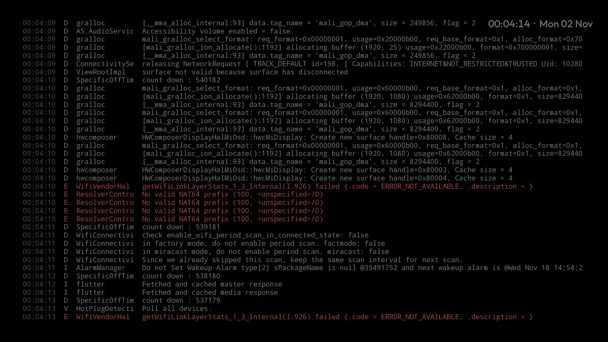
Buka alamat lokal SwadayaTV di browser ponsel dan pasangkan dengan PIN di TV. Geser untuk navigasi, mengetik, mengontrol media dan volume, mengelola aplikasi serta dock, mengubah pengaturan, mengirim pesan atau tautan, dan memindahkan file ke atau dari TV.
Di Wi-Fi yang sama, buka http://<IP TV>:8486. Beberapa kontrol memerlukan debugging USB; remote dasar dan fitur lain tetap berfungsi saat debugging dimatikan. Gunakan layanan lokal ini di jaringan yang tepercaya.
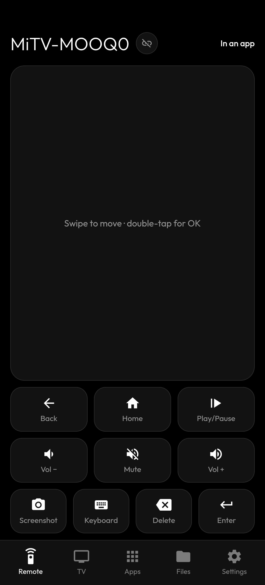
Pilih tangkapan layar untuk melihat tampilan ponsel sepenuhnya.
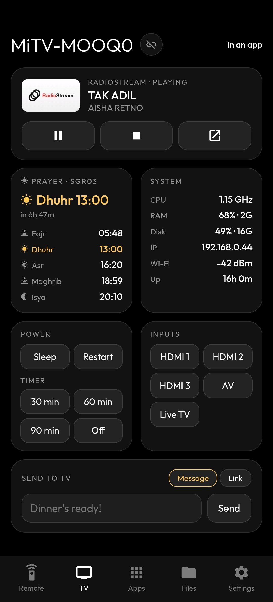


Tangkapan layar penuh 1920 × 1080 dari TV sebenarnya. Buka gambar mana pun untuk melihat semuanya—tidak ada yang terpotong.


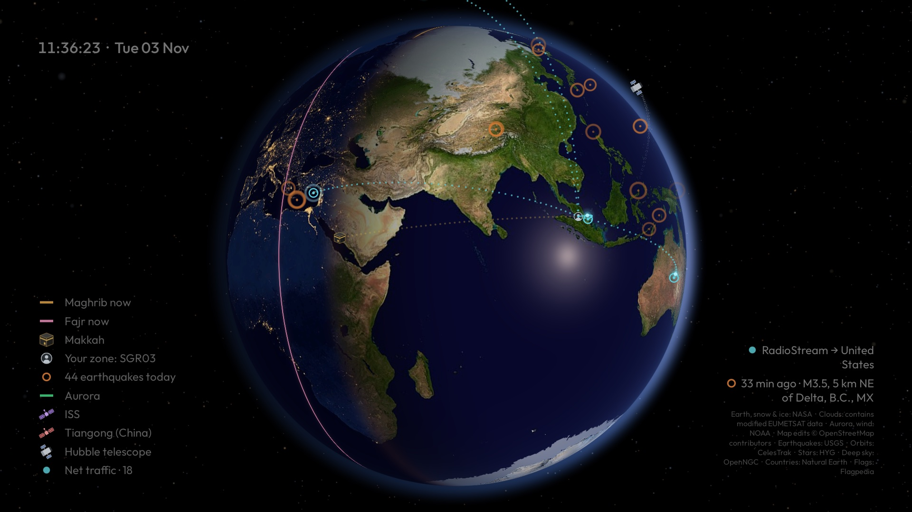


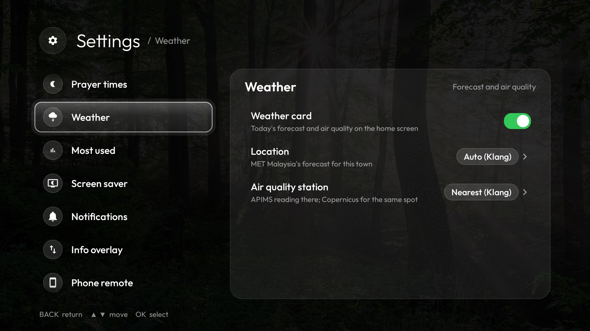
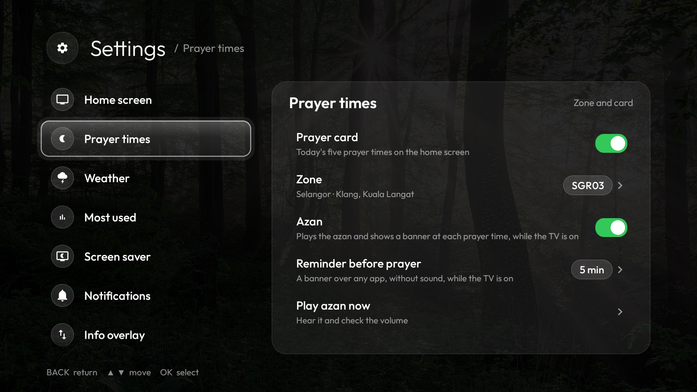
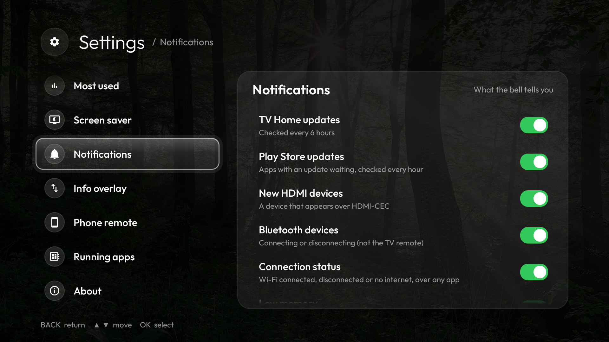
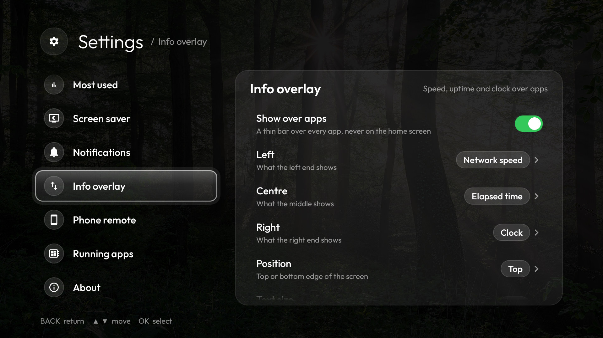

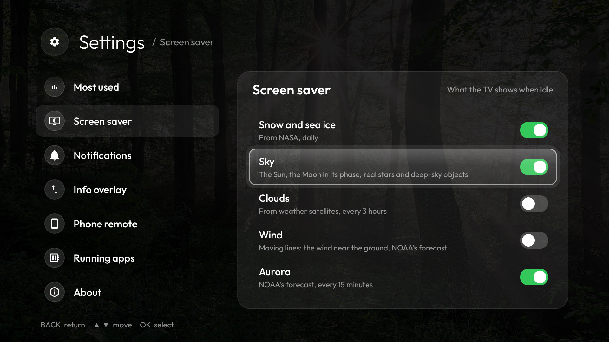

Satu APK dari halaman rilis. Pasang di TV, izinkan pengelola file memasang aplikasi, lalu pilih SwadayaTV sebagai Home di Setelan TV. Pembaruan berikutnya muncul di lonceng atau Settings → About.
Buka rilis terbaru dan, di bagian Assets, unduh tvhome-<versi>.apk (misalnya tvhome-1.1.5.apk). File mesin Net traffic juga dilampirkan di rilis yang sama; aplikasi mengunduhnya sendiri saat monitor pertama kali dijalankan.
Salin APK ke flash drive, atau kirim dengan aplikasi Downloader. Buka di TV, izinkan pemasangan dari sumber itu saat diminta, lalu pilih Install. Tanpa komputer dan tanpa ADB.
Di Setelan TV, pilih SwadayaTV sebagai layar Home (di Google TV, pilih juga sebagai launcher default). Tekan Home: aplikasi, jam, dan waktu salat hari ini langsung tampil. Pembaruan ada di Settings → About.
Setiap rilis menyimpan APK dan delapan file netengine-*.so-nya; rilis baru tidak menghapusnya, jadi TV yang masih memakai versi lama tetap bisa mengunduh yang dibutuhkannya. Kalau lebih suka memakai komputer dan adb, panduan pemasangan mencakup skrip dan APK yang sama.
Pemasangan dari file memerlukan izin Install unknown apps untuk pengelola file atau Downloader di TV.
USB debugging opsional. Launcher, Live TV, wallpaper, cuaca, waktu salat, remote ponsel, dan pembaruan berfungsi tanpa itu. Beberapa tambahan — Now Playing, Live log di Android 12 ke bawah, mengganti screen saver, restart dan matikan, force-closing aplikasi, serta keyboard dan screenshot remote — memintanya di Developer options.